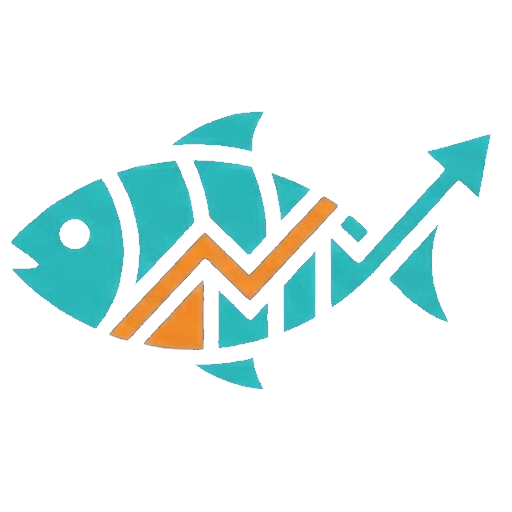

Meraloji, deniz koşullarını analiz ederek balık avı olasılıklarını hesaplar.
Haritada istediğiniz noktaya tıklayarak o bölgenin balık avı tahminini alın. Denize tıklamadığınız sürece analiz yapılmaz. Kara parçalarına tıklanırsa "Burası kara parçası" uyarısı verilir.
70-100 - Mükemmel koşullar, balık aktivitesi çok yüksek
50-70 - İyi koşullar, balık tutma şansı yüksek
30-50 - Orta koşullar, sabırlı olun
0-30 - Zayıf koşullar, alternatif nokta deneyin
GÜN - Tüm günün 24 saatlik ağırlıklı ortalaması. Balıkların en aktif olduğu saatler daha fazla ağırlık taşır.
ANLIK - Şu anki saat için 3 saatlik yuvarlanmış ortalama (gürültü filtreleme). Anlık koşulları yansıtır.
Tıkladığınız noktada o an yakalanma olasılığı en yüksek 10 balık türü gösterilir. En yüksek skorlu balık listenin en üstündedir. Her balığa tıklayarak:
🎯 Yem - Önerilen doğal/canlı yemler
🎣 İğne - İğne numarası ve tipi
🎪 Suni Yem - Yapay yem önerileri
⚙️ Takım - Olta takımı önerisi
📏 Yasal Boy - Minimum yakalama boyu
Seçili noktanın 7 günlük detaylı balık avı tahmini. Her gün için:
• En yüksek balık skorunu
• Genel hava durumunu
• Rüzgar ve dalga durumunu gösterir
Bir güne tıklayarak o günün saatlik detaylarını, balık listesini ve önerilen taktiği görüntüleyebilirsiniz.
EMODnet Bathymetry veritabanından gerçek zamanlı derinlik verisi:
Negatif değer (-) - Deniz altı derinliği (metre)
Pozitif değer (+) - Kara yüksekliği (metre)
Örnek: -25m = 25 metre derinlikte deniz, +150m = 150 metre yükseklikte kara
💨 Rüzgar - Hız (knot) ve yön (derece)
🌡️ Sıcaklık - Hava sıcaklığı (°C)
🌊 Su Sıcaklığı - Deniz yüzeyi sıcaklığı (°C)
📉 Basınç Trendi - Hızla düşerse = Feeding Frenzy! (Balıklar çılgınca beslenir)
☁️ Bulutluluk - Yüzde cinsinden
🌧️ Yağış - mm cinsinden
Sistemin o an için önerdiği balıkçılık taktiği. Örnekler:
⚡ FEEDING FRENZY - Basınç hızla düşüyor, balıklar aşırı aktif
🌅 ŞAFAK - Altın saatler, levrek/lüfer için en iyi zaman
🌊 Dalgalı-Bulanık - Levrek/karagöz için ideal koşullar
⚠️ TEHLİKE - Dalga çok yüksek, denize çıkmayın
Yıldız (K - 0°) - Soğuk hava taşır, sıcaklığı düşürür
Poyraz (KD - 45°) - Sert ve soğuktur, berraklık getirir
Gündoğusu (D - 90°) - Kuru ve soğuktur, yağışı keser
Keşişleme (GD - 135°) - Sıcak ve kurudur, sıcaklığı yükseltir
Kıble (G - 180°) - Güneyden sıcak ve nemli hava taşır
Lodos (GB - 225°) - Sıcak ve şiddetlidir, bulanıklık getirir
Günbatısı (B - 270°) - Nemli hava taşır, yağış bırakabilir
Karayel (KB - 315°) - Soğuk cephe getirir, sıcaklığı hızla düşürür